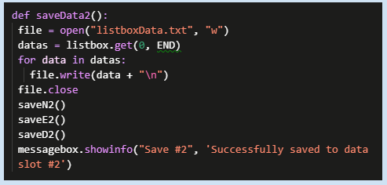
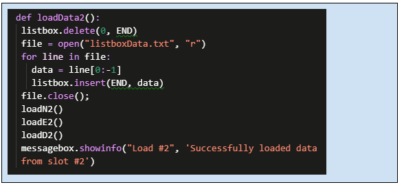
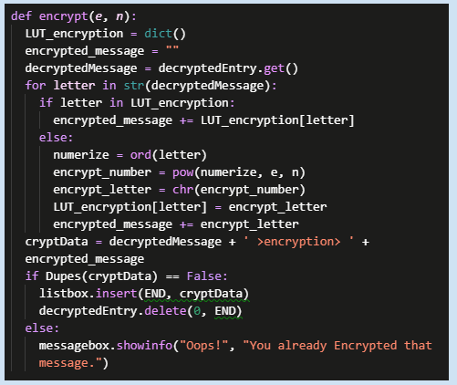
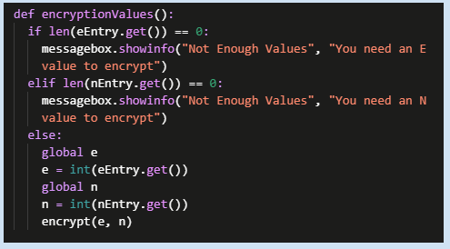
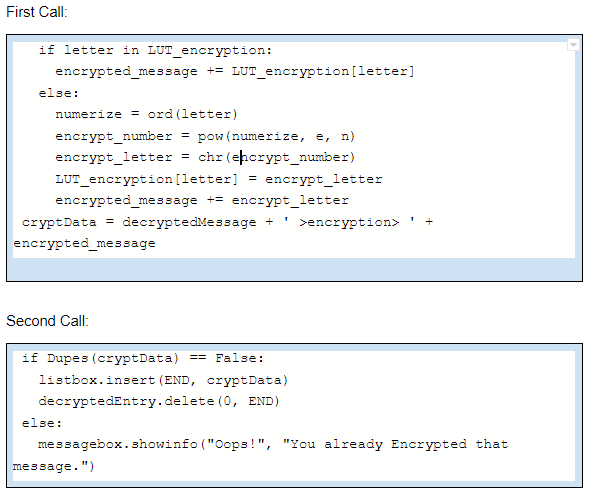

Describe the overall purpose of the program:
The purpose of my program is to give people a more customizable way to encrypt and decrypt messages by letting the user choose their N, E, and D values that many of the alternatives to my program don’t let you modify.
Describe what functionality of the program is demonstrated in the video:
My program can encrypt, decrypt, and store logs of encrypted and decrypted messages which can later be loaded back into the program. In addition my program can also clear all information in the GUI, or delete a singular item from the current log.
Describe the input and output of the program demonstrated in the video:
You can input new N, E, and D values or use the presets that were given in my program to get an encrypted version of a decrypted message you enter, or a decrypted version of an encrypted message you enter.
This first program code segment must show how data have been stored in the list:
This second program code segment must show the data in the same list being used, such as creating new data from the existing data or accessing multiple elements in the list, as part of fulfilling the program’s purpose:
“listbox” is the name of the list being used in the above image.
The data contained in my list is a log of all the messages the user has encrypted and decrypted. If my list did not exist there would be no place for an output in my program unless I decided to use a messagebox popup, but that would be an inferior alternative because the listbox stores more information for the user than a messagebox would and the listbox can be visible at all times.
Student-developed procedure code:
This is where the student developed procedure is being called:
In summary: The procedure encrypts characters from an entrybox based on the numbers input for the N and E values.
The detailed explaination: My encryption function starts by defining a dictionary that is used to store information on what character translates to a certain other character. Reset your encrypted message to be nothing. Next take your decrypted input and numerize each character in the message (unless a decrypted character is already in your dictionary, then you can just skip the following steps and insert the previous translation you have for that character into the encrypted message.) Once you’ve numerized your message apply it to the formula (encrypted message)=(numerized message)^e (mod n) and add it to your dictionary in case you need to encrypt the same letter again later. Next add the letter you’ve encrypted to your encrypted message and finally before inserting it into a log check to make sure this message hasn’t already been encrypted. If it has, tell the user they’ve already encrypted this message. If the user has not encrypted this message before then add it to their log.
Describe two calls to the procedure identified in written response 3c. Each call must pass a different argument(s) that causes a different segment of code in the algorithm to execute:
The first call checks to see if a decrypted character the user is trying to encrypt is already in their dictionary, if so then the program can use the translation already in the dictionary. If the letter isn’t in the dictionary the program encrypts the character and adds the translation to the dictionary.
The second call tests to see if a message has been encrypted before, If it has not then the message before it is added to the log. If the message has been encrypted before the message is not re-added to the log and the user is notified that they’ve already encrypted the message.